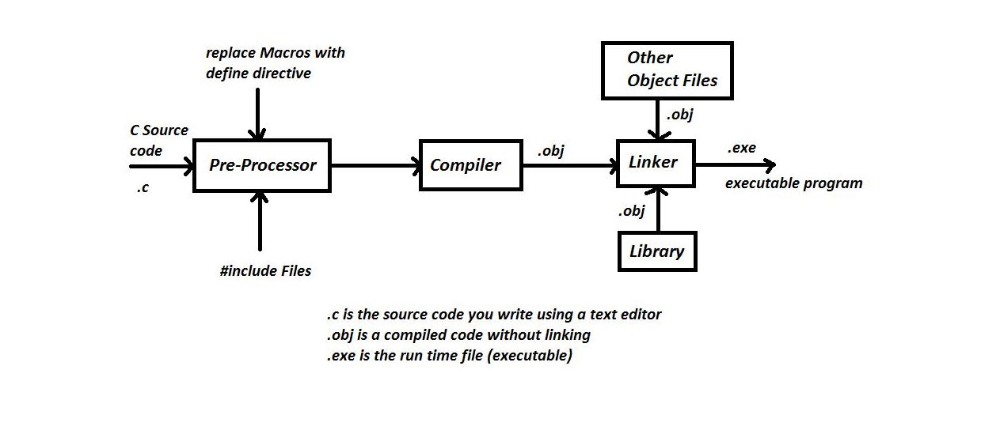

The C Programming System

Firstly the program is written in the form of number of text files using a screen editor.
- This form of the program is called the source program.
- It is not possible to execute this file directory.
Secondly, the completed source file is passed to a compliler -
- Compiler is a program which generates a new file containing a machine code translation of the source text.
- This file is called an object file.
Steps to write C Programs and get the output
- If you want to create, compile and execute C programs and execute C programs by your own, you have to
install C compiler in your machine. Then, you can start to execute your own C programs in your machine.
- Once C compiler is installed in your machine, you can create, compile and execute C programs.